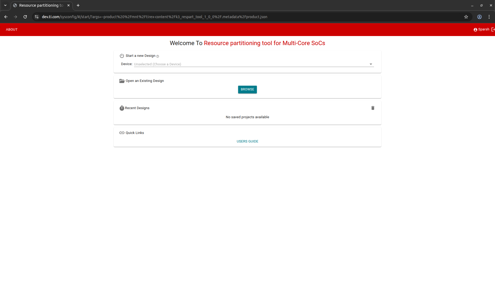
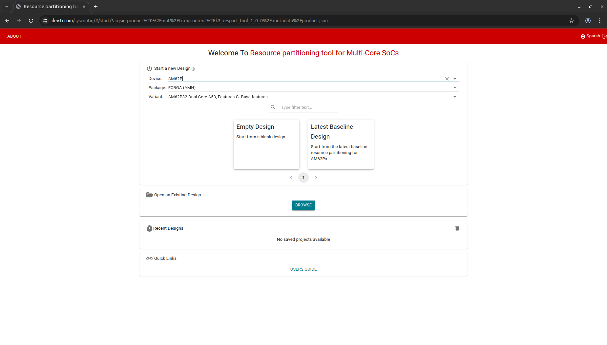
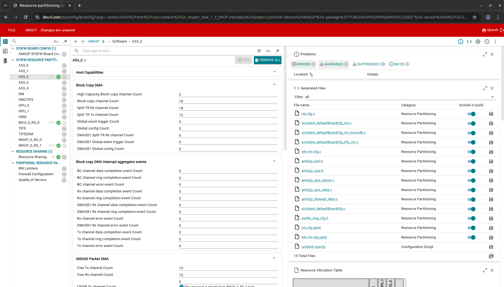
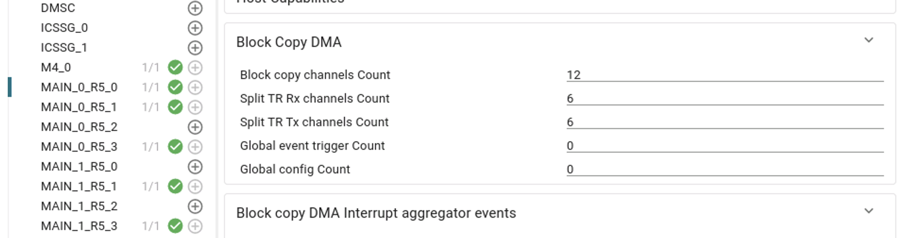
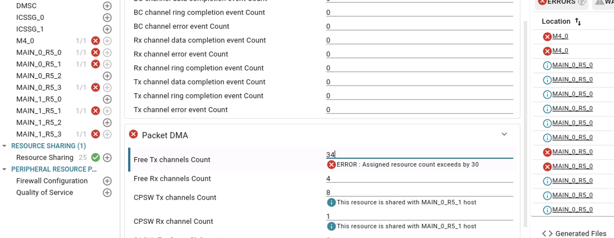
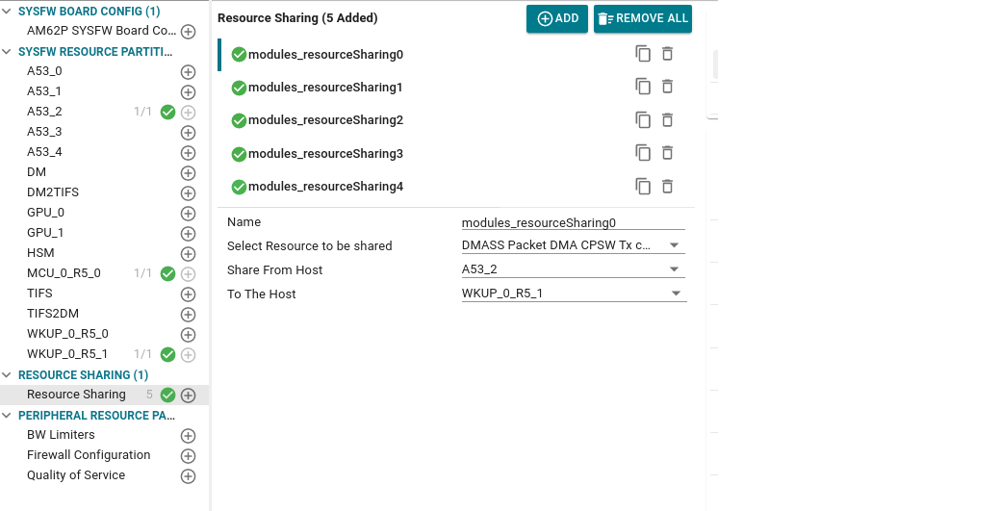
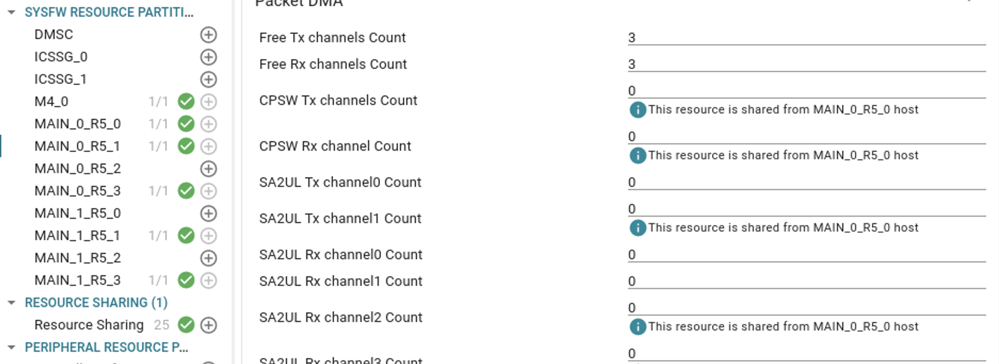

|
AM62Px MCU+ SDK
12.00.00
|
|
|
AM62Px MCU+ SDK
12.00.00
|
|
Various resources of the SOC like the number of DMA channels, number of interrupt router outputs, number of interrupt aggregator virtual interrupt numbers etc. are usually managed by a resource management system or a resource manager.
In the case of AM62PX devices, this is managed by the DM Firmware (Device Manager Firmware) running on the WKUP R5 / DM R5 core. Once the DM firmware is loaded on DM R5 and is initialized, it will read a certain configuration data regarding the resources we would be using. ROM bootloader (RBL) should have loaded this as part of bootflow. This is largely an array of resource assignment entries, with each entry specifying the start number of the resource, count or number of resource needed, type of resource, host id of the core which will request for this resource, etc. Later when the request for a specific resource is made, the DM firmware will cross check the request parameters with this already sent configuration data, and the requested resources will only be allocated if that falls within the range in this configuration data. We call this the Resource Management Board Configuration or RM boardcfg.
Refer TISCI documentation for more details on the RM board configuration.
RM Boardcfg is stored in a C file {SDK_ROOT_DIRECTORY}\source\drivers\sciclient\sciclient_default_boardcfg\am62px\sciclient_defaultBoardcfg_rm.c. Ultimately this file needs to be changed and rebuilt for the boardcfg change to take effect. This file is autogenerated using a SysConfig based GUI tool (K3 Resource Partitioning Tool). This tool can used online or can be invoked from the commandline.
The K3 Resource Partitioning Tool, now also known as K3 Resource Configuration, is now available as a software product on the TI website, providing a unified user experience similar to other SysConfig-based tools, such as AM6X ClockTree and DDR Configuration Tools.
To access the tool online, follow these steps:


To access the tool locally, run the following from the SDK root directory

| HOST ID | Core |
|---|---|
| TISCI_HOST_ID_TIFS (0U) | TIFS ARM Cortex M4 |
| TISCI_HOST_ID_A53_0 (10U) | Cortex A53SS0_0 (Secure Context) |
| TISCI_HOST_ID_A53_1 (11U) | Cortex A53SS0_0 (Secure Context) |
| TISCI_HOST_ID_A53_2 (12U) | Cortex A53SS0_1 (Non-Secure Context) |
| TISCI_HOST_ID_A53_3 (13U) | Cortex A53SS0_1 (Non-Secure Context) |
| TISCI_HOST_ID_A53_4 (14U) | Cortex A53SS0_0 (Non-Secure Context) |
| TISCI_HOST_ID_MCU_0_R5_0 (30U) | Cortex MCU R5 (Non-Secure Context) |
| TISCI_HOST_ID_GPU_0 (31U) | GPU_0 (Non-Secure Context) |
| TISCI_HOST_ID_GPU_1 (32U) | GPU_1 (Non-Secure Context) |
| TISCI_HOST_ID_WKUP_0_R5_0 (35U) | Cortex R5FSS0_0 (Secure Context) |
| TISCI_HOST_ID_WKUP_0_R5_1 (36U) | Cortex R5FSS0_0 (Non-Secure Context) |
| TISCI_HOST_ID_DM2TIFS (250U) | DM2TIFS(Secure): DM to TIFS communication |
| TISCI_HOST_ID_TIFS2DM (251U) | TIFS2DM(Non Secure): TIFS to DM communication |
| TISCI_HOST_ID_HSM (253U) | HSM (Secure) |
| TISCI_HOST_ID_DM (254U) | DM(Non Secure): Device Management |
Refer TISCI Host descriptions




Once you have configured your resources using the K3 Resource Configuration tool, you can generate the output files required for your project.
To generate output files using the online tool, follow these steps:
{SDK_ROOT_DIRECTORY}\source\drivers\sciclient\sciclient_default_boardcfg\am62px\ directory. Remove the "_mcusdk" suffix from the file name and overwrite any existing file with the same name.You can also save other files as needed by following the same steps.
To generate output files using the local tool, follow these steps:
{SDK_ROOT_DIRECTORY}\source\drivers\sciclient\sciclient_default_boardcfg\am62px\sciclient_defaultBoardcfg_rm.c file.After making changes to the config file and generating the sciclient_defaultBoardcfg_rm.c file, you need to rebuild the board configuration binary blob. To do this, run the following command from the SDK root directory:
Running the above command will update the boardcfg binary blob at {SDK_ROOT_DIRECTORY}\source\drivers\sciclient\sciclient_default_boardcfg\am62px\.
 1.8.20
1.8.20